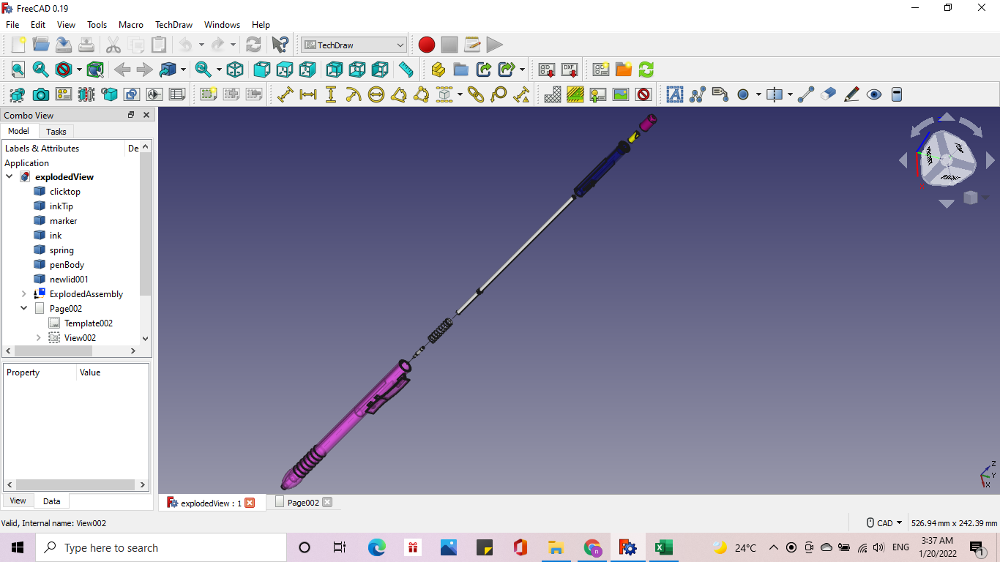

AutoChef
AutoChef is a 4-in-1 cooking appliance capable of stirring, dispensing liquids and ingredients, and cooking automatically

Solar-Powered Smartphone Charging Station
The station is wall-mounted, and is equipped with two phone holders.
Smart Circuit Calculator
A program made using C++. This application is used to analyze circuits through mesh and nodal analysis.
Automatic Plant Watering System
The system will water the plant at specific intervals. An ultrasonic sensor is used to ensure the presence of the plant before watering it.
My First 3D Animation
Sprinkled donut with Blender.
Computer Aided Drawing Project
Building a ballpen CAD drawing using Freecad Software.
